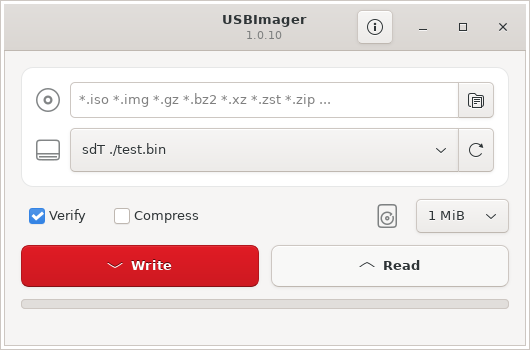
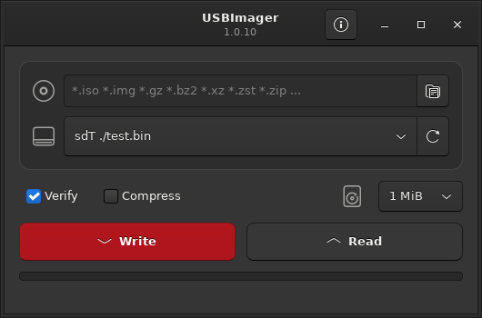

ImageUploader writes compressed disk images to USB drives and SD cards, and creates backups. It's small, has no dependencies, and runs on Linux, Windows and macOS.

Pick an image, pick a drive, press Write. Everything else is handled for you.
.gz, .bz2, .xz and .zst images, plus .zip (incl. ZIP64), .zzz, .tar, .cpio and .pax archives. No need to extract first.
It tries to be bullet-proof: your system disk is kept out of the target list, so you won't overwrite your OS by accident.
Compares the disk to the image as it writes. All data is physically on the drive when the progress bar hits 100%.
Read a drive back to a raw image or a ZStandard-compressed one with a single click.
Send images straight to embedded boards over a serial port, with a configurable baud rate.
GDI on Windows, Cocoa on macOS, GTK or X11 on Linux. It picks up your system language on its own.
No runtime to install and no extra libraries: every parser and decompressor is built in.
No telemetry, no tracking, no ads, no accounts. Fully GDPR compatible.
Everything on one screen: the image, the drive, and a Write button that looks as serious as what it does. It follows your system theme, dark mode included.

Download version 1.0.0 for Linux (x86_64, Ubuntu 22.04 / Debian 12 or newer), or build it from source. All files and checksums are on the Releases page.
Install the .deb with sudo apt install ./imageuploader_1.0.0-amd64.deb. Windows and macOS: build from source for now.
# Debian / Ubuntu dependencies sudo apt install build-essential libgtk-3-dev # optional, lets non-root users write via udisks2 sudo apt install libudisks2-dev git clone https://github.com/parsamajidi21/ImageUploader.git cd ImageUploader/src USE_GTK=1 make ./imageuploader
# default: X11 on Linux, GDI on Windows, Cocoa on macOS make USE_TUI=1 make # text interface USE_WRONLY=1 make # write-only make install # install under /usr make deb # build a .deb package make help # list every option
That's the whole manual.
Click the folder button or drag an .iso, .img, .xz, .zip… file onto the window.
Plug in your USB stick or SD card and select it from the list. Hit refresh if it isn't there yet.
Press Write. When the progress bar reaches 100%, the data is on the drive and verified.
dd?If you're comfortable with the command line, dd works. For everyone else:
dd isn't cross-platform; Windows needs an app anywaydd wrapper